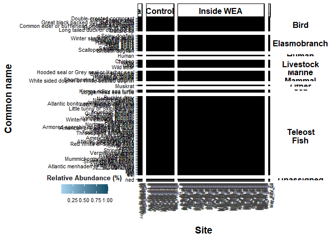

Relative Abundance Heatmaps: eDNA metabarcoding base script
.Rmd script
This script plots your relative abundance matrix as a heatmap. Figures produced are potentially part of the main figures of your manuscript/report.
Load libraries
library(ggplot2) ## for plotting
library(dplyr) ## for data table manipulation
##
## Attaching package: 'dplyr'
## The following objects are masked from 'package:stats':
##
## filter, lag
## The following objects are masked from 'package:base':
##
## intersect, setdiff, setequal, union
library(tidyr) ## for data table manipulation
library(readxl) ## for reading in excel files
library(stringr) ## for data transformation
library(strex) ## for data transformation
library(purrr) ## for data transformation
library(funrar) ## for make_relative()
library(tidyverse) ## for data transformation
## ── Attaching core tidyverse packages ──────────────────────── tidyverse 2.0.0 ──
## ✔ forcats 1.0.0 ✔ readr 2.1.5
## ✔ lubridate 1.9.3 ✔ tibble 3.2.1
## ── Conflicts ────────────────────────────────────────── tidyverse_conflicts() ──
## ✖ dplyr::filter() masks stats::filter()
## ✖ dplyr::lag() masks stats::lag()
## ℹ Use the conflicted package (<http://conflicted.r-lib.org/>) to force all conflicts to become errors
library(naniar) ## replace_with_na_all function
library(ggh4x) ## for facet wrap options
##
## Attaching package: 'ggh4x'
##
## The following object is masked from 'package:ggplot2':
##
## guide_axis_logticks
library(tidytext)
Load data
df <- read_xlsx("example_output/Results_relab_long.xlsx") %>%
mutate(across(c(relab), ~ round(.x, 5)))
Remove Categories
If you want to plot relative abundance without human, other, or livestock categories. As FYI/warning, relative abundance is calculated with these categories included. Relative abundance can also be thought of as proportion of total reads, which is calculated from the total reads for that sample.
df_filtered <- df %>%
filter(!Category == "Other" & !Category == "Livestock" & !Category == "unassigned" & !Category == "Human")
Plot
reverse label order: scale y discrete limits reverse limits=rev
https://coolors.co/ (hit tools on the top right hand side)
## if subset of categories is desired, replace df below with df_filtered
df %>%
## replace zeros with NAs for plotting
replace_with_na_all(condition = ~.x == 0.00000) %>%
## ggplot basic options (USER EDIT: X AND Y AXIS)
ggplot(., aes(x=Site, y=Common_name)) +
geom_tile(aes(fill = relab), color = "black") +
## x, y, and legend labels (USER EDITS IF DESIRED)
ylab("Common name") +
xlab("Site") +
labs(fill = "Relative Abundance (%)") +
## color of the tile options; direction=1 will flip the low/high (USER EDITS IF DESIRED)
scale_fill_gradient(na.value = "white", low = "lightskyblue2", high = "#0C4D66") +
## facet grid with Category and project variables
facet_grid2(Category ~ SampleType,
scales = "free", space = "free",
labeller = labeller(Category = label_wrap_gen(width = 10))) +
## graph theme options
theme_classic() +
theme(
## axis text
axis.text.x = element_text(angle = 90, size=6, color="grey25", hjust = 1),
axis.text.y = element_text(colour = 'black', size = 8),
## legend text and title
legend.text = element_text(size = 8, color="black"),
legend.title = element_text(margin = margin(t = 0, r = 0, b = 5, l = 0), size=10, color="black", face="bold"),
legend.position = c(-0.4, -0.05),
legend.key.height = unit(5, 'mm'),
legend.direction = "horizontal",
legend.key.width = unit(5, 'mm'),
legend.title.align = 0.5,
legend.title.position = "top",
## axis titles
axis.title.y = element_text(margin = margin(t = 0, r = 10, b = 0, l = 0), size=14, face="bold"),
axis.title.x = element_text(margin = margin(t = 10, r = 0, b = 0, l = 0), size=14, face="bold"),
## facet wrap labels
strip.text.x = element_text(color = "black", face = "bold", size = 12),
strip.text.y = element_text(color = "black", face = "bold", size = 12, angle=0),
strip.background.y = element_blank(),
strip.clip = "off"
)
## Warning: The `legend.title.align` argument of `theme()` is deprecated as of ggplot2
## 3.5.0.
## ℹ Please use theme(legend.title = element_text(hjust)) instead.
## This warning is displayed once every 8 hours.
## Call `lifecycle::last_lifecycle_warnings()` to see where this warning was
## generated.
## Warning: A numeric `legend.position` argument in `theme()` was deprecated in ggplot2
## 3.5.0.
## ℹ Please use the `legend.position.inside` argument of `theme()` instead.
## This warning is displayed once every 8 hours.
## Call `lifecycle::last_lifecycle_warnings()` to see where this warning was
## generated.

## USER EDITS WIDTH AND HEIGHT TO DESIRED
ggsave("example_output/Figures/Relative_abundance.png", width = 7, height = 10)
## Group by family or order from gmgi_db info? this would break down teleost fish more
## ecological niche? functional groups? would probably require more metadata..